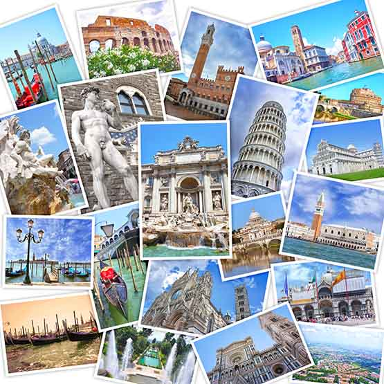
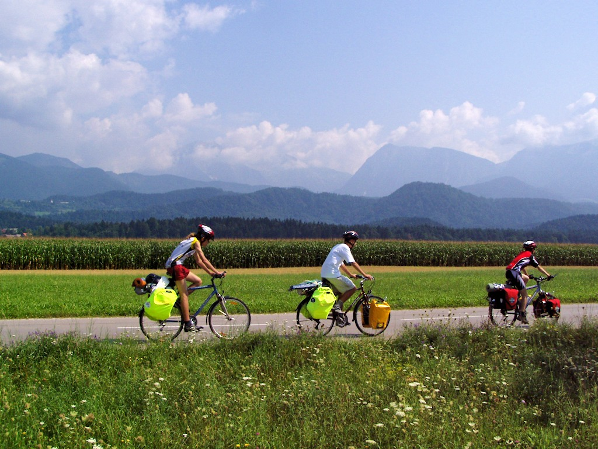
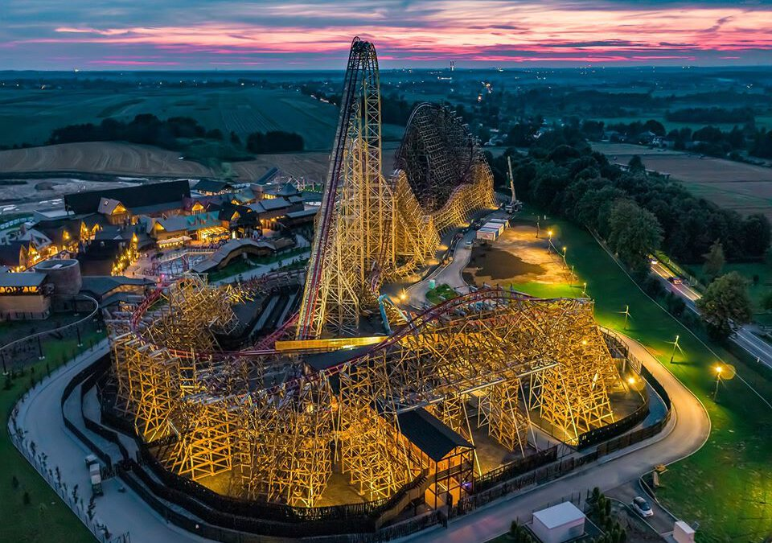

Zarządzanie usługami turystycznymi
|
Aleksander Wolszczak Usługi turystyczne – usługi oferowane podróżnym, spośród których największe znaczenie mają usługi noclegowe, usługi wyżywieniowe oraz usługi transportowe
Według polskiego prawa usługi turystyczne to przewóz pasażerów, zakwaterowanie w celach innych niż pobytowe, które nie jest nieodłącznym elementem przewozu pasażerów, wynajem pojazdów samochodowych lub innych pojazdów silnikowych, inną usługę świadczoną podróżnym, która nie stanowi integralnej części usług wyżej wymienionych. Przed 1 lipca 2018 r. usługi turystyczne obejmowały usługi przewodnickie, usługi hotelarskie oraz wszystkie inne usługi świadczone turystom lub odwiedzającym.
 Trzy główne rodzaje turystyki turystykę krajową - podróże mieszkańców po własnym kraju.
turystykę przyjazdową- przyjazdy do kraju osób zamieszkałych na stałe gdzie indziej.
turystykę wyjazdową- wyjazdy mieszkańców danego kraju za granicę
 Atrakcje turystyczne w pobliżu Krakowa Energylandia – tematyczny park rozrywki położony w Zatorze w województwie małopolskim, otwarty 14 lipca 2014 roku. Największy park rozrywki w Polsce.
Kopalnia Soli „Wieliczka”-
 |
|